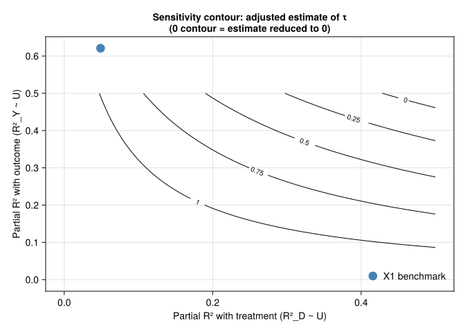

using DataFrames
using GLM
using Statistics
using Random
using LinearAlgebra
using Printf
using CairoMakie5 Sensitivity Analysis
The previous chapters often treat identification as yes or no. Applied work is usually less clean. We may believe the adjustment set is good, but still worry about some remaining confounding. Sensitivity analysis asks a practical question: how strong would unmeasured confounding have to be to change the conclusion?
Related reading: An extended R-based treatment of the Cinelli-Hazlett robustness value with
sensemakrand benchmark interpretations appears in the companion blog chapter on sensitivity analysis of Topics on Econometrics and Causal Inference.
Here I use three tools:
- Cinelli-Hazlett (2020) omitted-variable bias bounds — robustness values and benchmark comparisons for OLS regression estimates.
- E-values (VanderWeele-Ding 2017) — for risk-ratio estimates, the minimum strength an unmeasured confounder would need.
- Rosenbaum bounds — the critical odds ratio of hidden bias that would render a matched-sample test insignificant.
There is no standard Julia package for these, but the formulas are short.
5.1 A simulated example
Use a simulation so the truth is known:
Random.seed!(2026)
n = 2000
X1 = randn(n)
X2 = randn(n)
U = randn(n) # unmeasured confounder
D = @. Float64(rand() < 1 / (1 + exp(-(0.5 * X1 + 0.5 * X2 + 0.6 * U))))
Y = @. 1.0 * D + 1.5 * X1 + 1.5 * X2 + 1.0 * U + 0.5 * randn()
df = DataFrame(Y = Y, D = D, X1 = X1, X2 = X2, U = U)
@printf("True treatment effect: 1.000\n")
@printf("Naive (D only): %.3f\n",
coef(lm(@formula(Y ~ D), df))[end])
@printf("Adjusted (D, X1, X2): %.3f (biased because U is unobserved)\n",
coef(lm(@formula(Y ~ D + X1 + X2), df))[end])
@printf("Oracle (D, X1, X2, U): %.3f\n",
coef(lm(@formula(Y ~ D + X1 + X2 + U), df))[end])True treatment effect: 1.000
Naive (D only): 2.787
Adjusted (D, X1, X2): 1.448 (biased because U is unobserved)
Oracle (D, X1, X2, U): 1.003The adjusted regression is still biased because \(U\) is unobserved.
5.2 Cinelli-Hazlett robustness value
The robustness value is the minimum partial \(R^2\) an unobserved confounder would need with both treatment and outcome to bring the estimate to zero.
The closed-form expression depends only on the t-statistic of the treatment coefficient and the regression’s degrees of freedom:
\[ RV_q = \tfrac{1}{2}\left[\sqrt{f_q^4 + 4 f_q^2} - f_q^2\right], \qquad f_q = q\, \frac{|t|}{\sqrt{df}}, \]
where \(|t|\) is the absolute t-stat of the treatment coefficient, \(df\) is the residual degrees of freedom, and \(q\) is the fraction of the estimate we want explained away (\(q = 1\) for full explanation).
"""
robustness_value(t_stat, df; q=1.0)
Minimum partial R² with both treatment and outcome that an unmeasured
confounder would need to fully explain away a fraction `q` of the estimate.
Cinelli & Hazlett (2020).
"""
function robustness_value(t_stat::Real, df::Real; q::Real=1.0)
fq = q * abs(t_stat) / sqrt(df)
return 0.5 * (sqrt(fq^4 + 4 * fq^2) - fq^2)
end
# Fit the adjusted regression and extract t-stat + dof
fit_adj = lm(@formula(Y ~ D + X1 + X2), df)
t_adj = coef(fit_adj)[2] / stderror(fit_adj)[2]
df_resid = dof_residual(fit_adj)
rv = robustness_value(t_adj, df_resid; q=1.0)
rv5 = robustness_value(t_adj, df_resid; q=1.0 - 1.96/abs(t_adj)) # q to reach significance
@printf("t-statistic on D: %.2f\n", t_adj)
@printf("Residual df: %.0f\n", df_resid)
@printf("Robustness value (q=1): %.4f (= %.2f%% partial R²)\n",
rv, 100rv)
@printf("RV to reach insignificance: %.4f (= %.2f%% partial R²)\n",
rv5, 100rv5)t-statistic on D: 29.24
Residual df: 1996
Robustness value (q=1): 0.4745 (= 47.45% partial R²)
RV to reach insignificance: 0.4521 (= 45.21% partial R²)The useful interpretation is comparative: compare the RV to the partial \(R^2\) values of observed covariates.
5.2.1 Benchmarking against observed covariates
How strong are the observed covariates as a reference? Compute their partial \(R^2\) contributions:
# Partial R² of a covariate: variance explained over a model that omits it
function partial_r2(full_fit, reduced_fit)
ss_full = sum(abs2.(residuals(full_fit)))
ss_reduced = sum(abs2.(residuals(reduced_fit)))
1 - ss_full / ss_reduced
end
# Partial R² of X1 with the outcome (omit X1)
fit_noX1_Y = lm(@formula(Y ~ D + X2), df)
pR2_X1_Y = partial_r2(fit_adj, fit_noX1_Y)
# Partial R² of X1 with the treatment (a separate regression)
fit_D_full = lm(@formula(D ~ X1 + X2), df)
fit_D_noX1 = lm(@formula(D ~ X2), df)
pR2_X1_D = partial_r2(fit_D_full, fit_D_noX1)
@printf("Benchmark — X1:\n")
@printf(" Partial R² with Y: %.4f\n", pR2_X1_Y)
@printf(" Partial R² with D: %.4f\n", pR2_X1_D)
@printf("\nRobustness value: %.4f\n", rv)
@printf("\nIf an unobserved confounder is as strong as X1 with BOTH Y and D,\n")
@printf("would it explain the estimate? %s\n",
min(pR2_X1_Y, pR2_X1_D) > rv ? "YES — fragile result" : "NO — robust to this benchmark")Benchmark — X1:
Partial R² with Y: 0.6209
Partial R² with D: 0.0489
Robustness value: 0.4745
If an unobserved confounder is as strong as X1 with BOTH Y and D,
would it explain the estimate? NO — robust to this benchmarkThe benchmark comparison turns the RV into a sentence: an unmeasured confounder as strong as \(X_1\) would or would not overturn the result.
5.2.2 A sensitivity contour plot
The contour plot below shows, for each \((R^2_{D \sim U}, R^2_{Y \sim U})\) pair, the implied estimate of the treatment effect under that strength of unobserved confounding:
# Bias formula (Cinelli-Hazlett 2020, eqn 4):
# bias = se(τ̂) * sqrt(df) * sqrt( R²_Y * R²_D / (1 - R²_D) )
# adjusted_estimate = τ̂ - bias (or + bias, the worst case is the larger absolute)
tau_hat = coef(fit_adj)[2]
se_hat = stderror(fit_adj)[2]
grid = 0.0:0.01:0.5
bias_matrix = [se_hat * sqrt(df_resid) * sqrt(r2y * r2d / max(1 - r2d, 1e-8))
for r2y in grid, r2d in grid]
adjusted = tau_hat .- bias_matrix # worst-case (downward) bias
fig = Figure(size = (700, 500))
ax = Axis(fig[1, 1],
xlabel = "Partial R² with treatment (R²_D ~ U)",
ylabel = "Partial R² with outcome (R²_Y ~ U)",
title = "Sensitivity contour: adjusted estimate of τ\n" *
"(0 contour = estimate reduced to 0)")
contour!(ax, grid, grid, adjusted, levels = [0.0, 0.25, 0.5, 0.75, 1.0],
labels = true, color = :black)
# Mark the X1 benchmark
scatter!(ax, [pR2_X1_D], [pR2_X1_Y], color = :steelblue, markersize = 18,
label = "X1 benchmark")
axislegend(ax, position = :rb, framevisible = false)
fig
A confounder above and to the right of the zero contour would reduce the estimate to zero. The benchmark dot shows the strength of an observed covariate for comparison.
5.3 E-values
For risk-ratio estimates, VanderWeele and Ding (2017) propose a simpler-to-interpret sensitivity statistic. For an observed risk ratio \(RR > 1\), the E-value is the minimum strength of association (on the risk-ratio scale) that an unobserved confounder would need to have with both treatment and outcome to fully explain the observed association:
\[ \text{E-value} = RR + \sqrt{RR\,(RR - 1)}. \]
For \(RR < 1\), use \(1/RR\) first and apply the formula.
"""
evalue(rr; lo=missing, hi=missing)
Compute the E-value for a risk ratio and (optionally) its 95% confidence
interval. Returns (E_point, E_ci) where E_ci is the E-value needed to
shift the lower CI bound past 1 (or upper past 1 if rr < 1).
"""
function evalue(rr::Real; lo=missing, hi=missing)
e_point = rr >= 1 ? rr + sqrt(rr * (rr - 1)) : begin
rr_inv = 1 / rr
rr_inv + sqrt(rr_inv * (rr_inv - 1))
end
e_ci = missing
if !ismissing(lo) && !ismissing(hi)
if rr >= 1 && lo > 1
e_ci = lo + sqrt(lo * (lo - 1))
elseif rr < 1 && hi < 1
hi_inv = 1 / hi
e_ci = hi_inv + sqrt(hi_inv * (hi_inv - 1))
else
e_ci = 1.0 # CI crosses 1, no E-value needed
end
end
return (e_point = e_point, e_ci = e_ci)
end
# Example: a study reports RR = 1.40 [1.20, 1.62]
ev = evalue(1.40; lo = 1.20, hi = 1.62)
@printf("RR = 1.40 [1.20, 1.62]\n")
@printf("E-value (point): %.2f\n", ev.e_point)
@printf("E-value (CI): %.2f\n", ev.e_ci)RR = 1.40 [1.20, 1.62]
E-value (point): 2.15
E-value (CI): 1.69The interpretation is on the risk-ratio scale: a hidden confounder would need associations of this size with both treatment and outcome to explain away the result.
5.4 Rosenbaum bounds for matched studies
For matched estimators (propensity score matching, full matching, optimal matching), Rosenbaum bounds (Rosenbaum 2002) parametrise hidden bias as \(\Gamma\), the maximum ratio of treatment odds between the two units of a matched pair due to unobservables. \(\Gamma = 1\) corresponds to within-pair randomisation; \(\Gamma = 2\) means one unit’s odds of receiving treatment can be up to twice the other’s.
For each value of \(\Gamma\), the upper-bound \(p\)-value of the Wilcoxon signed-rank test on matched-pair outcome differences is:
# Simulate matched-pair differences from a known DGP
Random.seed!(7)
n_pairs = 500
true_effect = 0.5
diffs = true_effect .+ 0.8 .* randn(n_pairs)
using Distributions: Normal, cdf
"""
rosenbaum_pvalue(diffs, gamma)
Upper-bound one-sided p-value of the Wilcoxon signed-rank test on matched
pair differences, allowing for hidden bias of magnitude `gamma` ≥ 1.
"""
function rosenbaum_pvalue(diffs, gamma)
abs_d = abs.(diffs)
sgn = sign.(diffs)
rks = sortperm(sortperm(abs_d)) # ranks of |d|
# Under Γ, prob of positive sign is bounded by Γ/(1+Γ)
p_pos = gamma / (1 + gamma)
T_obs = sum(rks[sgn .> 0])
mu = p_pos * sum(rks)
v = p_pos * (1 - p_pos) * sum(rks .^ 2)
z = (T_obs - mu) / sqrt(v)
return 1 - cdf(Normal(), z)
end
gammas = 1.0:0.25:5.0
pvals = [rosenbaum_pvalue(diffs, g) for g in gammas]
result = DataFrame(Gamma = gammas, p_upper = pvals)
# Critical Γ: smallest Γ where p exceeds 0.05
critical_idx = findfirst(p -> p > 0.05, pvals)
critical_gamma = critical_idx === nothing ? Inf : gammas[critical_idx]
@printf("Critical Γ (p > 0.05): %.2f\n", critical_gamma)
@printf("\n%-10s %s\n", "Γ", "p (upper bound)")
for (g, p) in zip(gammas, pvals)
@printf("%-10.2f %.4f\n", g, p)
endCritical Γ (p > 0.05): 3.00
Γ p (upper bound)
1.00 0.0000
1.25 0.0000
1.50 0.0000
1.75 0.0000
2.00 0.0000
2.25 0.0001
2.50 0.0013
2.75 0.0121
3.00 0.0599
3.25 0.1799
3.50 0.3725
3.75 0.5887
4.00 0.7698
4.25 0.8891
4.50 0.9534
4.75 0.9827
5.00 0.9942If the critical \(\Gamma\) is close to 1, small hidden bias could overturn the matched-pair result. (The reported value is the first point on the 0.25 grid at which significance is lost; the actual crossing lies between it and the preceding grid point.)
5.5 Reporting practice
Most observational causal estimates should have some sensitivity analysis. A minimum report is:
| Estimator family | What to report |
|---|---|
| Linear regression | Cinelli-Hazlett RV + benchmark comparison |
| Risk-ratio analysis | E-value (point + CI) |
| Matched / pair-based test | Critical \(\Gamma\) from Rosenbaum bounds |
When the result is fragile, the next step is either to improve measurement and adjustment or to report partial-identification bounds.
5.6 Summary
- Sensitivity analysis asks how strong hidden confounding must be to change the result.
- Robustness values are useful for regression estimates.
- E-values are useful for risk ratios.
- Rosenbaum bounds are useful for matched pairs.
- The basic formulas are easy to implement directly in Julia.